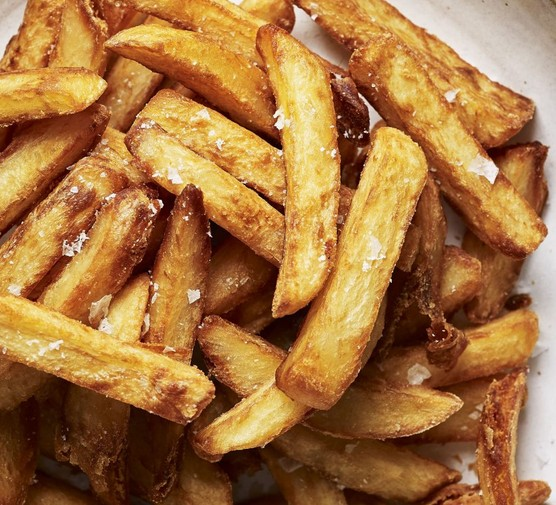

Chips

Achieve the perfect oven-roasted chips at home with
a fluffy interior and crispy skin. These are much
easier to cook and lower in fat than fried
- 6 large potatoes
- 2 tsp olive oil
- 1 tsp celery salt
- sea salt, to serve
- Heat the oven to 200C/180C fan/gas 6. Peel the
potatoes and cut them into long chip shapes –
the thickness is entirely up to you, though the
width of a finger is ideal. Rinse under the cold
tap and pat dry with a tea towel.
- Spread the chips on a large non-stick baking tray
and toss with the olive oil and celery salt. Lie
them flat in a single layer – use two trays
rather than overcrowd one.
- Roast for 45-50 mins, turning now and then. When
cooked they should be golden brown and crisp with
a light fluffy centre. Scatter on sea salt to serve.